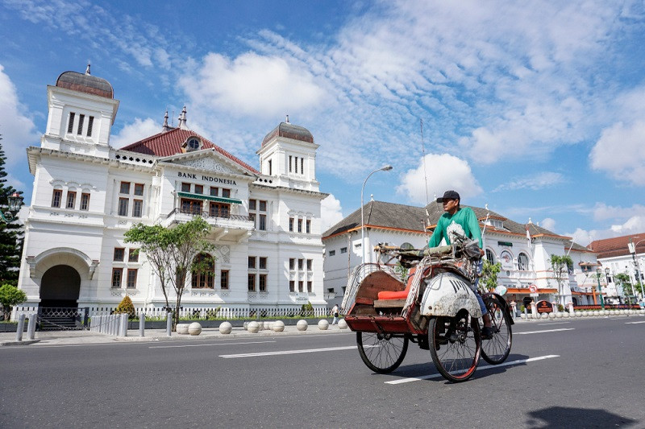
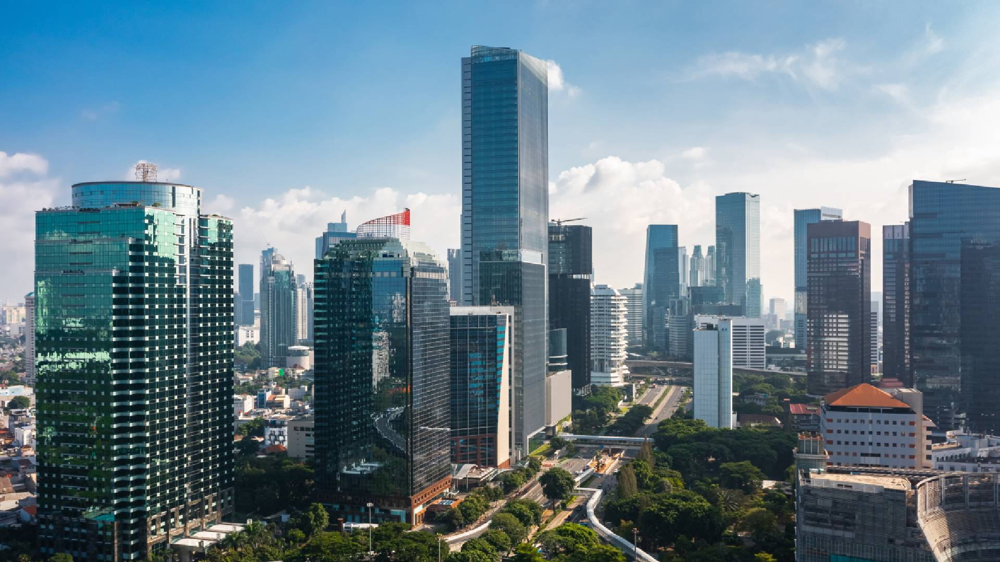

Beranda
Destinasi
Panduan Perjalanan
Kontak & Profil
Traveloka
Jawa
Simfoni Budaya dan
Ekonomi Tanah Air
Dari hiruk pikuk kota hingga tenangnya warisan budaya
semuanya menunggu untuk dijelajahi.

Must See in Java
Temukan Destinasi Paling Mengesankan di Jawa
Bandung
Yogyakarta
Gunung Bromo

Jakarta
Semarang